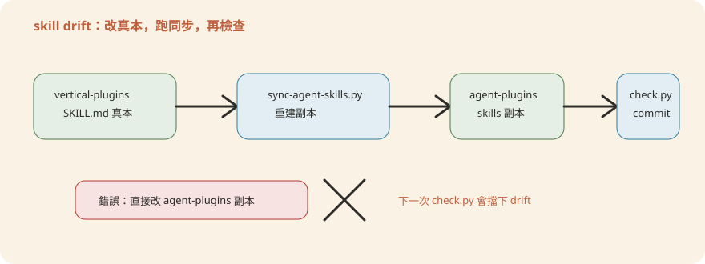

Appendix附錄：詞彙表、指令速查卡、疑難排解與上線檢核清單
前面 12 章講的是「為什麼這樣設計」與「怎麼動手改」。這份附錄是你日常會反覆翻的工具書：一份中英對照的詞彙表、一張指令速查卡、十幾條真實會踩到的坑與解法，以及一份從零到上線、對映回各章節的總檢核清單。全部內容都來自你實際跑過 scripts/、mock-mcp/、managed-agent-cookbooks/ 這幾個資料夾會看到的檔名與錯誤訊息，不是憑空編的術語表。
A. 詞彙表
這份 repo 混用了兩套語彙：Anthropic API 的正式名詞（callable_agents、steering、SSE）跟這個 repo 自己的工程慣例（真本／副本、漂移、白名單）。第一次遇到不熟的詞，回來查這張表就好，不用重讀整章。
| 詞彙 | 英文全稱 | 一句話白話 |
|---|---|---|
| CMA | Claude Managed Agents（Claude 託管代理） | 把 agent 部署到 Anthropic 雲端，由你的後端程式呼叫 POST /v1/agents 驅動，無人值守。 |
| MCP | Model Context Protocol（模型情境協定） | agent 接外部系統（總帳、CRM、行情、制裁名單）的標準插座，靠 server「名字」解析，不是靠寫死的網址。 |
| steering event | Steering Event（引導事件） | 送進一個正在跑的 agent session 的一則新指令，例如 Process earnings: TSMC 2026-Q1；handoff 最終也是變成一則新的 steering event。（本書正文慣例保留英文不譯。） |
| callable_agents | Callable Agents（可呼叫子代理） | orchestrator 在 agent.yaml 裡靜態宣告能委派的葉子工人清單；目前是研究預覽功能，只支援一層委派。 |
| leaf worker | Leaf Worker（葉子工人） | callable_agents 底下被呼叫的子代理，只能被 orchestrator 呼叫，自己不能再往下叫其他子代理。 |
| handoff_request | Handoff Request（交棒請求） | agent 輸出裡的一段結構化 JSON，意思是「這件事該換另一支 named agent 接手」，由 orchestrate.py 之類的路由器解析後轉成新 steering event。 |
| skill | Skill（技能） | 針對特定任務的知識包（一份 SKILL.md），例如「怎麼做同業比較」。真本在 vertical-plugins/，副本同步進 agent-plugins/<slug>/skills/。 |
| canonical prompt | Canonical System Prompt（唯一來源系統提示） | plugins/agent-plugins/<slug>/agents/<slug>.md，外掛直接讀、CMA 用 system.file 指回同一份，不重寫兩次。 |
| drift | Drift（漂移） | agent 包裡的 skill 副本內容跟 vertical-plugins/ 真本不一致，check.py 偵測到就讓 commit 失敗。 |
| SSE | Server-Sent Events（伺服器推送事件） | CMA 沒有對話視窗，靠這種單向、長連線的事件流把 agent 的輸出即時推給呼叫端（orchestrate.py 就是在讀這條流）。 |
| dry-run | Dry Run（空跑） | 只把 manifest 解析成會送出的 API 載荷、印出來看，不真的呼叫 POST /v1/agents；deploy-managed-agent.sh <slug> --dry-run。 |
| vertical | Vertical Plugin（垂直領域外掛） | FSI 業務條線的分類，例如 financial-analysis、fund-admin、private-equity；skill 真本、指令、.mcp.json 都按 vertical 分資料夾。 |
| security tier | Security Tier（安全分層） | 🟢🟡🔴 三級風險標記；越靠近「錢」跟「法規」風險越高，寫檔權就收得越緊。 |
| HITL | Human-in-the-loop（人在迴路中） | 外掛模式的安全模型：人全程在旁監督，需要分工或攔停時可以隨時介入。 |
| eval | Evaluation（評測） | 拿埋了考點（故意塞錯誤／陷阱）的樣本資料跑 agent，對著答案卡逐項打分，驗證的是判斷力而不只是格式對不對。 |
| agent.yaml | Agent Manifest（CMA 部署清單） | 用 POST /v1/agents 真實欄位名稱寫的 manifest，指回 canonical 系統提示、skills 與 callable_agents。 |
| output_schema | Output Schema（輸出結構定義） | 掛在會碰未受信任資料的 reader 子代理上的 JSON schema，逼它只能回結構化欄位、不能夾帶自由文字（降低 prompt injection 的傷害面）。 |
| mock MCP | Mock MCP Server（本機假伺服器） | mock-mcp/ 底下用假 CSV 餵資料的本機 Python server，讓你零金鑰、離線把 agent 從頭跑到尾。 |
| skill_id | Skill ID | skill 上傳到 /v1/skills 後拿到的識別碼，部署腳本會拿它取代 manifest 裡的路徑寫法。 |
| steering-examples.json | Steering Examples | 每個 CMA cookbook 附的範例事件檔，示範怎麼觸發這支 agent（例如 Screen onboarding packet <id>）。 |
| from_plugin | skills: [{from_plugin: ...}] | manifest 的便利寫法：整個外掛目錄下 skills/* 全部上傳，不用一條一條列路徑。 |
| cookbook | Managed-Agent Cookbook（CMA 食譜） | managed-agent-cookbooks/<slug>/ 整個資料夾：agent.yaml＋subagents/＋steering-examples.json＋README.md。 |
| 環境變數白名單 | Allowlist Regex | 部署腳本代換 ${..._MCP_URL} 這類環境變數時，值只准 [A-Za-z0-9._/:@-]，其餘字元直接拒絕，避免把奇怪內容注進 API 載荷。 |
| patch bump | Patch Version Bump（修訂號自動遞增） | pre-commit 掛鉤把動到的 plugin.json 的 version 補一個 patch，整條分支只比 main 多一個 patch（不是每次 commit 都加一次）。 |
| MRM | Model Risk Management（模型風險管理） | 銀行監理要求：任何會影響決策或財務數字的「模型」都要版本控制、獨立驗證、變更審批、定期複核；agent 的 system prompt + skill 合起來就是這個意義下的模型，一樣要照這套規矩管（見第 10 章）。 |
| SLA | Service Level Agreement（服務等級協議） | 講好的可用度／回應時間承諾。CMA 模型推論算 Anthropic 的 SLA；MCP server、編排器這些周邊系統的 SLA 要銀行自己扛（見第 11 章）。 |
| NAV | Net Asset Value（資產淨值） | 基金每單位的淨值；statement-auditor、valuation-reviewer 這類 fund-admin agent 的計算多半是圍繞它打轉。 |
| LP | Limited Partner（有限合夥人） | 基金的出資人（相對於負責操盤的 GP，General Partner／普通合夥人）；對帳、月結、估值報告最終多半是要交給 LP 看。 |
| golden output | Golden Output（黃金基準輸出） | 存下來的「正確答案」執行紀錄（如 docs/outputs/ 的 execution_history.md）；改了 prompt/skill 之後重跑，拿新結果跟它比對，判斷有沒有退步（見第 12 章）。 |
| LLM-as-judge | LLM-as-judge（拿 LLM 當裁判） | 用另一個 LLM 呼叫，依評分準則讀 agent 的完整輸出與過程，打分或給 pass/fail；用在「該不該升級」「有沒有守住拒答邊界」這類難以寫規則斷言的評測維度（見第 12 章）。 |
B. 指令速查卡
下面是日常開發、demo、上線會反覆敲的指令。每一條都直接來自對應腳本的 usage 說明或 README，可以放心複製貼上（記得把 <slug> 換成實際的 agent 名字，例如 kyc-screener）。
python3 scripts/check.pypython3 scripts/sync-agent-skills.pypython3 mock-mcp/run_all_http.py
python3 mock-mcp/run_all_http.py --only internal-gl subledgerpython3 mock-mcp/selftest.py# macOS / Linux / Git Bash
source mock-mcp/mock.env
# Windows PowerShell
. mock-mcp/mock_env.ps1scripts/deploy-managed-agent.sh kyc-screener --dry-runexport ANTHROPIC_API_KEY=sk-ant-xxxxx
export SCREENING_MCP_URL=https://screening.yourbank.internal/mcp
scripts/deploy-managed-agent.sh kyc-screenerbash scripts/test-cookbooks.shexport SOURCE_SESSION_ID=sess_abc123
export AGENT_IDS='{"kyc-screener":"agent_111","gl-reconciler":"agent_222"}'
python3 scripts/orchestrate.pygit commit --no-verify -m "wip: 先不跑 check.py"C. 疑難排解
以下每一條都是「症狀→原因→解法」的真實踩坑紀錄，對應到你實際會看到的錯誤字串。用 Ctrl+F 找關鍵字比從頭讀更快。
commit 被擋，錯誤裡有 bundled-skill: ... drifted from ...
原因：改了 plugins/vertical-plugins/<vertical>/skills/ 底下的真本，卻忘了同步，導致 plugins/agent-plugins/<slug>/skills/ 的副本內容跟真本不一致。解法：python3 scripts/sync-agent-skills.py 把副本整包覆蓋重建，再跑一次 python3 scripts/check.py 確認乾淨。永遠記得口訣：改真本 → 跑 sync → 跑 check。

部署時噴 POST /v1/agents failed，或收到 401 / Unauthorized
原因：ANTHROPIC_API_KEY 沒設定、打錯，或已過期；deploy-managed-agent.sh 在非 --dry-run 模式下會用 : "${ANTHROPIC_API_KEY:?ANTHROPIC_API_KEY must be set}" 強制檢查這個變數存在，但不會幫你檢查它是不是有效金鑰。解法：確認金鑰來源正確、沒有過期，且是有 CMA beta 權限（anthropic-beta: managed-agents-2026-04-01）的金鑰；先用 --dry-run 排除 manifest 本身的問題。
skill 上傳失敗：POST /v1/skills failed for <path>，拿不到 id
原因：upload_skill() 把 skill 資料夾打包成 zip 送到 /v1/skills（用 anthropic-beta: skills-2025-10-02 這個獨立 beta header），伺服器沒回 id 通常代表資料夾內容有問題（例如混進不該有的檔案）或 beta 權限沒開。解法：檢查 plugins/agent-plugins/<slug>/skills/<name>/ 底下只有必要檔案，用 --dry-run（此時 skill_id 會是假的 DRYRUN_<name>）先確認流程沒卡別的地方。
環境變數被拒絕：refusing ${...}: value contains characters outside [A-Za-z0-9._/:@-]
原因：${..._MCP_URL} 這類環境變數的值含有空白、引號或其他不在白名單裡的字元，deploy-managed-agent.sh 的 yaml2json() 故意用正則擋下來，避免奇怪內容被注進 API 載荷。解法：檢查對應環境變數的實際內容，通常是網址複製貼上時多了空白或換行，去掉即可；正常的 URL（https://host/path）都在白名單範圍內。
mock-mcp/run_all_http.py 啟動失敗，port 已被佔用
原因：9 支 mock server 各自固定一個 port（8001–8009），上次沒關乾淨、或本機其他程式已經占用其中一個。解法：只需要某幾支就用 --only 縮小範圍；或者找出佔用該 port 的程序關掉——Windows 下用 netstat -ano | findstr 800 找出 PID 再結束；也可以單獨用 python3 mock-mcp/internal-gl/server.py --http --port 8001 手動起單一支排除問題。
Windows 上執行 .sh 腳本或 /plugin marketplace add 一直失敗
原因：deploy-managed-agent.sh／test-cookbooks.sh 是 bash 腳本，Windows 原生 cmd/PowerShell 不能直接執行；另外 /plugin marketplace add 對 Windows 反斜線路徑很挑，常常直接失敗。解法：用 Git Bash 執行 .sh 腳本；加 marketplace 一律用正斜線路徑（c:/Users/.../AnthropicFinancialAgents），還是不行就改用互動式 /plugin 介面進 Marketplaces 分頁手動加，容錯度比較高。
test-cookbooks.sh 報 depth>1 (subagent has callable_agents)
原因：某個 subagents/*.yaml（葉子工人）裡自己也寫了 callable_agents，等於這個 worker 想再往下委派一層，違反「一層委派」的限制。解法：把 leaf worker 的 yaml 裡的 callable_agents 欄位整段拿掉；跨 agent 的協作不要靠巢狀委派，改用 handoff_request 交給 orchestrate.py 路由成新的 steering event。
SSE 斷線：orchestrate.py 跑到一半停掉，handoff 沒有被觸發
原因client.beta.agents.sessions.stream() 是一條 SSE 長連線，網路中斷、來源 session 已結束、或程序本身被中斷都會讓這個迭代器提前結束；這支腳本明確標注「REFERENCE ONLY」，沒有內建重連邏輯。解法：這只是示範 handoff 路由「形狀」的參考實作，正式環境要接自己的工作流引擎（Temporal／Airflow／Guidewire 事件匯流排）並加上重試與斷線監控；先確認 SOURCE_SESSION_ID 對應的 session 還活著再重跑。
安裝外掛時噴 name 'claude-for-financial-services' is reserved for official Anthropic marketplaces
原因：本機 .claude-plugin/marketplace.json 的 name 還是原始值，這是 Anthropic 官方保留名稱，只允許來自 anthropics GitHub 組織的來源使用，本機資料夾來源會直接報錯。解法：把 name 改成非保留名稱（例如 fsi-local），這是本機專用改動，別 commit 上去；改完用 /plugin install <slug>@fsi-local 安裝。
sync-agent-skills.py 印出 WARN: no vertical source found for: ...，結束碼非 0
原因：某個 plugins/agent-plugins/<slug>/skills/<name>/ 資料夾，在所有 vertical-plugins/*/skills/ 底下都找不到同名的真本來源——通常是 skill 改名字、或搬到別的 vertical 沒同步過來。解法：核對這個 skill 名稱在對應 vertical 底下確實存在；如果是刻意搬移，要連 agent 包裡的引用一起處理，別留下孤兒副本。
deploy-managed-agent.sh 直接說 requires jq 或 requires python3 + pyyaml
原因：部署腳本用 jq 處理 JSON、用 python3 -c 'import yaml'（pyyaml）做 manifest 轉換，兩者缺一都會在腳本一開頭就擋下來。解法：裝 jq（Windows 可用 choco install jq 或 Git Bash 內建的版本）、pip install pyyaml；scripts/check.py 一樣依賴 pyyaml，一次裝好兩邊都能用。
check.py 報 ref: ... system.file -> ... (not found) 或 callable_agents.manifest -> ... (not found)
原因：agent.yaml 或 subagents/*.yaml 裡寫的相對路徑錯了，或者被引用的檔案被搬移／刪除；check.py 是以 yaml 檔案自己所在的資料夾當作路徑基準（base）去解析。解法：對照 yaml 檔案實際位置手動核對相對路徑該怎麼寫（通常是 ../../plugins/agent-plugins/<slug>/... 這種形式），修好後重跑 python3 scripts/check.py 直到印出 OK。
D. 從零到上線總檢核清單
下面照「開發 → 整合 → 部署 → 治理 → 維運」五個階段排，每項打勾狀態會存在瀏覽器 localStorage，重整頁面不會消失。括號裡是對應章節，想看細節直接點連結回去讀。
開發
- 讀完 第 1 章（導論），能講出「一份系統提示、兩種輸出」這個核心設計
- 讀完 第 2 章（核心概念與 CMA 架構），能對著任一支
agent.yaml逐欄解釋它解析成什麼 API 載荷 - 照
docs/QuickStart.md用外掛模式、零金鑰把第一支 agent（market-researcher）跑起來一次（對應 第 3 章） - 讀 第 4 章（客製化），搞清楚「改流程」「改 skill」「改分工/權限」分別要動哪個檔
- 讀 第 5 章（新增 Agent），走一遍新增一支 named agent 的骨架與兩邊殼要補的檔案
整合
- 讀 第 6 章（銀行系統整合），確認每個 MCP 名字要怎麼對映到你行內的總帳/CRM/篩查系統
- 跑
python3 mock-mcp/run_all_http.py，把 9 支本機 mock 全部起來，離線把 10 支 agent 完整跑過一遍 - 讀 第 8 章（多代理協作），搞懂
callable_agents只有一層委派、跨 agent 協作一律走handoff_request - 確認每支高風險（🔴）agent 的 leaf worker 權限切分沒有被誤改：碰髒資料的 reader 沒有 write，唯一有 write 的 worker 不碰原始未受信任文件
部署
- 讀 第 7 章（AWS 部署），分清楚「CMA 本身跑在 Anthropic 雲端」跟「周邊系統（呼叫端、MCP server、orchestrate.py）在你的 AWS 帳號」這兩件事
- 對每支要上線的 agent 先跑
scripts/deploy-managed-agent.sh <slug> --dry-run，人工核對解析後的載荷沒問題 - 跑
bash scripts/test-cookbooks.sh，確認所有 cookbook 都通過 depth-1、system 非空、無output_schema洩漏三項檢查 - 把要上線的 MCP 從本機 mock（
127.0.0.1:800x）換成真實系統或廠商網址——外掛改對應 vertical 的.mcp.json，CMA 改部署時的${..._MCP_URL}環境變數，兩邊都不改 agent 裡的 server 名稱 - 正式送出部署前確認
ANTHROPIC_API_KEY與所有 MCP 環境變數都指向真實環境，不是還留著mock.env的值
治理
- 讀 第 9 章（安全與法遵），逐支盤點 security tier（🟢🟡🔴）跟對應的把關措施是否落實
- 讀 第 10 章（治理），確認每支 agent 的簽核流程、handoff 白名單（
orchestrate.py的ALLOWED_TARGETS）都跟業務現況一致 - 業務門檻（容差、重大性、估值政策）的異動，走會計/法遵 sign off，不是工程自己改完 SKILL.md 就上線
- 確認
.githooks的 pre-commit 掛鉤（版本號自動 patch bump）跟 GitHub Actionversion-bump都正常運作，作為更新推送的把關閘
維運
- 讀 第 11 章（維運），建立 SSE 斷線重試、部署版本追蹤的監控機制
- 讀 第 12 章（測試與評測），用埋考點樣本建一套可重複執行的 eval，對答案卡打分
- 每次改動（不管改劇本、SKILL.md、還是 CMA 的 yaml）都跑
python3 scripts/check.py，確認印出OK才 commit - 定期重跑
python3 mock-mcp/selftest.py，確保 demo/測試用的假資料本身沒有壞掉
E. 全書章節地圖與延伸閱讀
下表是全書 12 章的固定路由（data-chapter 合法值與資料夾名稱不得改動，見 Guidbook/assets/CHAPTER-SPEC.md），方便你直接跳到需要的章節；後面接的是 repo 裡 docs/ 底下的原始文件索引——這些文件是全書內容的一手來源，遇到本書沒講到的細節，回去查對應文件通常最快。
| 章 | 資料夾 | 內容一句話 |
|---|---|---|
| 第 1 章 | ch01-introduction | 導論：一套方案、兩種輸出，十支 agent 對映銀行業務的落點與缺口 |
| 第 2 章 | ch02-architecture | 核心概念與 CMA 架構：agent 四個組成、目錄結構、agent.yaml 逐欄解說、安全分層哲學 |
| 第 3 章 | ch03-getting-started | 快速上手：零金鑰跑通第一支 agent |
| 第 4 章 | ch04-customizing | 客製化：想改什麼、動哪個檔、三道安全閘怎麼保住 |
| 第 5 章 | ch05-new-agent | 新增一支 agent：從系統提示到兩邊殼各要補的檔案 |
| 第 6 章 | ch06-bank-integration | 銀行系統整合：MCP 怎麼接內部總帳/CRM/篩查系統 |
| 第 7 章 | ch07-aws-deployment | AWS 部署：CMA 雲端本體 vs 周邊系統（呼叫端、MCP、orchestrator） |
| 第 8 章 | ch08-orchestration | 多代理協作：callable_agents 一層委派與 handoff_request 跨 agent 路由 |
| 第 9 章 | ch09-security-compliance | 安全與法遵：security tier、最小權限、prompt injection 的把關 |
| 第 10 章 | ch10-governance | 治理與模型風險管理（MRM）：簽核流程、版本控管、稽核軌跡 |
| 第 11 章 | ch11-operations | 維運：監控、告警、成本歸因、部署與版本維護 |
| 第 12 章 | ch12-testing-evals | 測試與評測：埋考點樣本、答案卡驗收方法 |
| 附錄 | appendix（本頁） | 詞彙表、指令速查卡、疑難排解、上線總檢核清單 |
| 檔案 | 回答的問題 |
|---|---|
| docs/TechSummary.md | 一套方案怎麼運作：一個來源兩個輸出、外掛 vs CMA、十支 agent 各需要哪些 MCP、部署與維護流程 |
| docs/QuickStart.md | 手把手用外掛模式零金鑰跑通第一支 agent，含常見錯誤對照表 |
| docs/AgentSummary.md | 十支 agent 總覽：各自用途、什麼時候用、風險分級、驗收樣本重點表現 |
| docs/Customizing.md | 想改 X 要動哪個檔的總表、改之前的 5 個注意事項、CMA 三道安全閘 |
| docs/Models.md | 全 repo 財務模型 skill 清單、哪支 agent 在用、能怎麼換／新增模型 |
| docs/Journey.md | 十支 agent 串成一條業務鏈的完整故事與導入評估 |
| managed-agent-cookbooks/README.md | CMA 食譜總表：每支 agent 的 steering event 範例、leaf worker 分工、manifest 慣例對映 API 欄位 |
| mock-mcp/README.md | 9 支本機假 MCP server 的用法、port 對照表、怎麼接進外掛與 CMA 兩種 surface |
| CLAUDE.md | repo 結構總覽、check.py／sync-agent-skills.py 的維護紀律、開發流程 |
- 忘記名詞就查詞彙表；忘記指令就查速查卡，兩者都直接對照 repo 實際檔名，不是抽象術語
- 踩到坑先 Ctrl+F 查疑難排解，十二條涵蓋 check.py 漂移、部署 401、白名單拒絕、port 佔用、Windows bash、巢狀委派被拒、SSE 斷線等最常見情境
- 檢核清單按「開發→整合→部署→治理→維運」走一輪，每項都對映回對應章節，不會漏掉上線前該做的事
- 本書之外，
docs/*.md跟各README.md才是第一手來源，遇到本書沒細講的地方回去查最快